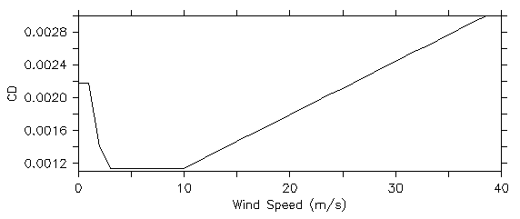
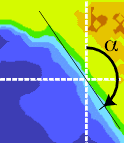
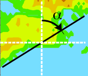
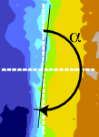

Upwelling Indices
Bakun Index
Bakun Upwelling Index Calculation
The Bakun (1973, 1975) upwelling indices are calculated based upon Ekman’s theory of mass transport due to wind stress. Assuming homogeneity, uniform wind and steady state conditions, the mass transport of the surface water due to wind stress is 90° to the right of the wind direction in the Northern Hemisphere. Ekman mass transport is defined as the wind stress divided by the Coriolis parameter (a function of the earth’s rotation and latitude). The depth to which an appreciable amount of this offshore transport occurs is termed the surface Ekman layer, and is generally 50 to 100 meters deep.
Ekman transports are resolved into components parallel and normal to the local coastline orientation. The magnitude of the offshore component is considered to be an index of the amount of water upwelled from the base of the Ekman layer. Positive values are, in general, the result of equatorward wind stress. Negative values imply downwelling, the onshore advection of surface waters accompanied by a downward displacement of water.
ERD upwelling index calculations (Schwing et al. 1996). are based on estimates of offshore Ekman transport driven by geostrophic wind stress. Geostrophic winds are derived from mean surface atmospheric pressure fields provided by the U.S. Navy Fleet Numerical Meteorological and Oceanographic Center (FNMOC), Monterey, CA.
Evolving model grids
Historically, ERD monthly upwelling indices were computed at 15 North American locations from monthly mean pressure fields prepared by FNMOC on a polar stereographic 3° mesh grid. Due to improvements in model development and increases in computational power and storage capacity, the FNMOC models (Clancy 1992; Rosmond 1992) and their pressure field output changed resolution over time (table below). From 1948 to 1967, data were provided on paper as monthly means. Subsequently ERD has maintained a relationship with FNMOC and obtained daily downloads of 6-hourly model forecasts.
| Years | Projection | Coverage | Resolution |
| 1967 - 1980 | 63 x 63 polar stereographic | Northern Hemisphere | about 3° latitude |
| 1981 - 1996 | 73 x 144 spherical | global | 2.5° |
| 1996 - present | 360x181 spherical | global | 1° |
ERD seeks to maintian long consistent time series of air/ocean indices for use in climate studies despite the changes in model resolution. Upwelling Indices for the N. American west coast are currently produced on two different grids (details below):
- Standard (“historical”) 3° product which provides consistency with early FNMOC model grids
- 1° product with updated coefficients and processing methods takes advantage of newer model resolutions.
At the present time, upwelling indices are calculated from 1° pressure fields produced by the Navy’s FNMOC NAVGEM model.
Traditional (“Historical”) 3-degree Upwelling Index Calculation
Historically, PFEL provided upwelling products derived from a 3-degree interpolation of the FNMOC polar stereographic pressure field. Mesh lengths less than 3-degrees were extrapolated to a 3-degree mesh length using Bessel’s central difference formula. From 1981 onward, 3° pressure values were linearly interpolated from a 2.5° grid.
In addition, due to limited computational ability, the geostropic winds used to compute upwelling index were originally derived from monthly averaged pressure fields. For consistency, the 3° monthly products provided at the 15 standard North American coastal locations are still computed in this manner. In addition, the parameterization of the drag coefficient (CD) used in the wind stress calculation is taken as a constant value of 0.0013 to calculate indices from 6-hourly pressure fields and is increased to 0.0026 to calculate indices from a monthly pressure field as was done in the original Bakun computation.
1-degree Upwelling Index Products
When 1° pressure fields became available from FNMOC in 1996, ERD scientists created a new product that takes advantage of the higher resolution model output and improves the parameterizations used in the Ekman transport calculation. These 1° air/ocean and upwelling indices are calculated in a similar way to ERD’s traditional 3° (Bakun 1973) calculation with the following exceptions:
- Global products (see list below) are derived and made available for download. Since 1996, these products are derived directly from 1° pressure fields. Prior to 1966, the are calculated from pressure fields derived by simple linear interpolation from the native grids (see discussion on grids above).
- Unlike the 3° products, where Ekman transport is derived from monthly averages of geostrophic winds calculated from 6-hourly pressure values, the 1° global products are computed from 6-hourly averages of geostropic winds, which are in turn calculated from the 1° 6-hourly pressure fields. Each of the 1° air/ocean index products is thus an average of 6-hourly values, rather than being computed from a monthly mean pressure field.
- The parameterization of the drag coefficient (CD) used in the wind stress calculation is taken as a function of wind speed (W) rather than a constant. A non-linear drag coefficient is used based on Large and Pond (1981) modified for low wind speeds as in Trenberth et al. (1990):
\[ \begin{align} CD &= 0.00218 \qquad(W \le 1m/s) \\ &= (0.62+1.56/W) \times .001 \quad(1m/s < W < 3m/s) \\ &= 0.00114 \qquad(3m/s \le W < 10m/s) \\ &= (0.49 + 0.065W) \times .001 \quad(W \ge 10m/s) \end{align} \]

- UTC time is used when calculating means rather than local time as was done in the historical products
Available Products
In addition to time series of Upwelling Index at the 15 standard Eastern North Pacific locations, Northern Hemisphere (1967 - 1980) and global (1981 - present) values of the following quantities have been calculated from the interpolated six-hourly 1-degree sea level pressure fields, and can be subsetted, visualized, and downloaded in a variety of formats.
- Pressure, mean sea level
- N-S and E-W components of geostropic wind
- Geostropic wind vector and magnitude
- N-S and E-W components of geostropic wind stress
- Geostropic wind stress vector and curl
- N-S and E-W components of Ekman transport
Should I use the historical or 1-degree index?
The calculation methods described are compared in the following examples, which show the difference between the 1° and the 3° products for the years 1967 to 1991. The magnitude of the difference depends on location, pressure gradient, wind speed, and other factors such as the original mesh size and possibly the proximity to the coast.
In some rare cases, we have found significant local differences in the upwelling index values calculated from the two grid sizes. For example, the index at 57N 137W derived from the 3° grid is substantially larger than the index calculated from the 1° pressure grid. This appears to be related to weaker local pressure gradients in the finer resolved grid, which result in lower local geostrophic winds and upwelling values than given with the more smoothed 3° grid, which spreads a steeper gradient over the site of this particular index.
“Global” Upwelling Index
ERD provides global Ekman transport on a 1-degree grid which allows users to calculate a time series of upwelling index (off-shore component of Ekman Transport) for any location in an Eastern Boundary Current, given a user-provided orientation of the coastline.
Instructions follow for calculating Bakun upwelling index from Ekman transport, however before proceeding be aware of the following caveats:
- Ekman transports are on a 1-degree grid so while you can technically compute upwelling index anywhere, finer scale calculations are interpolations that do not provide new information
- The calculation for computing Ekman transport from FNMOC pressure uses a geostrophic approximation and thus is not valid within about 10-15 degrees of the equator.
- Upwelling index should be calculated at locations at least 1-degree from the coast, particularly in areas with high coastal topography.
- The Bakun upwelling index is meant to be an estimate of large-scale variations in upwelling index, not an absolute value of the quantity of upwelled water.
Upwelling index is calculated by rotating Ekman transport to find the offshore component using the geometry of the coastline. Calculations can be done easily in applications such as R, Python, Matlab, or Ferret.
Components of Ekman transport:
Ekman transport can be obtained from the ERD ERDDAP™ data server:
- Monthly: https://coastwatch.pfeg.noaa.gov/erddap/griddap/erdlasFnWPr.html
- 6-hourly: https://coastwatch.pfeg.noaa.gov/erddap/griddap/erdlasFnTran6.html
While these data can be separately downloaded from the ERDDAP™ web pages, everything in ERDDAP™ is a service, which means that the transports can be accessed or downloaded directly from within the environment used to calculate upwelling index. Examples:
- R: function ‘download.file()’
- Python: the package ‘urllib2’
- Matlab: ‘websave()’
For more information on using ERDDAP™ see: https://coastwatch.pfeg.noaa.gov/erddap/griddap/documentation.html
Coastline Geometry:
The coastline orientation is entered as a “coast angle”, the angle the coast makes with north in the mathematical sense, and is defined as the angle the landward side of the coastline makes with a vector pointing north as illustrated in the following images, where the angle α (alpha) is the “coast angle”:



Please note that the “coast angle” required here should not be confused with the rotation angle (offshore vector direction) listed in the PFEL output for flow indices at the 15 standard locations.
Code Samples:
In the following code samples, ektrx and ektry are the x- and y- components of Ekman Transport obtained from the ERDDAP™ links above, and coast_angle is the angle α described in the diagrams above.